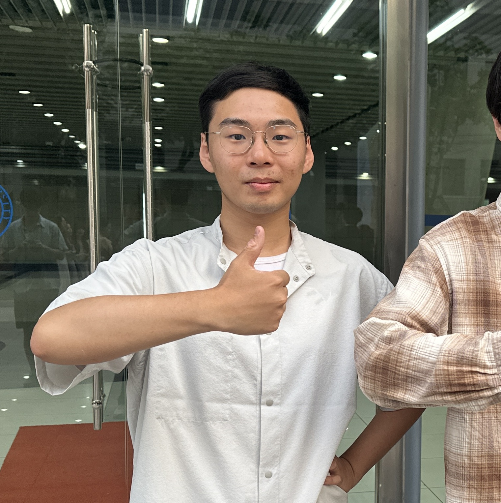
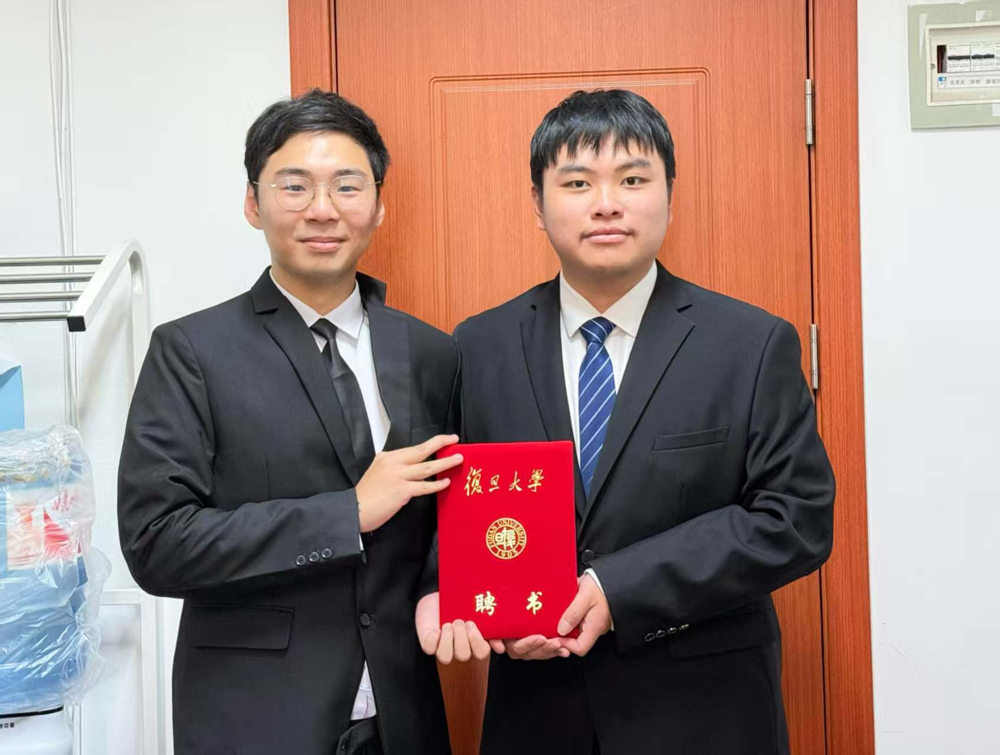

照片
简介
19级本科生，117的神。
连续两年获得国家奖学金，并在丘成桐大学生数学竞赛中连续两年荣获数学物理方向铜奖。 大三主持国家自然科学基金本科生项目，聚焦于DAHA与膜量子化中的代数结构研究，成功将拓扑弦理论与量子代数结合，取得原创性成果。 他曾受邀在东京大学、清华大学等高校作专题报告， 并入选国家自然科学基金委中德科学中心林岛项目，作为中国优秀学生代表团（全国仅22名博士生、8名本科生）之一， 赴德访问并参加2024年诺贝尔奖获得者大会， 与全球顶尖科学家深入交流。凭借坚实的理论基础和广阔的国际视野，张宇泰获得哈佛、普林斯顿等世界名校物理学博士录取， 未来将在哈佛大学继续投身高能理论物理研究，坚定不移地追寻科学的真理。
\o/\o/\o/神\o/\o/\o/
著作：
[1]Huang J, Nawata S, Zhang Y, et al. Branes and Representations of DAHA $ C^\vee C_1 $: affine braid group action on category[J]. arXiv preprint arXiv:2412.19647, 2024.相册
张宇泰穿西装
